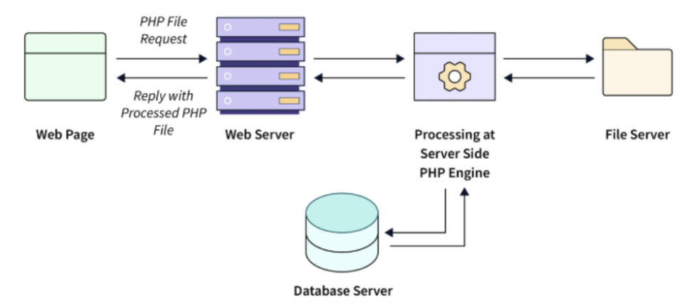

Introducción
En el capítulo anterior, hemos desmontado la "caja negra" del servidor. Hemos explorado la arquitectura cliente-servidor, los mecanismos de ejecución que utilizan Apache o Nginx, y el rol de los servidores de aplicaciones. Ahora que comprendemos cómo y dónde se ejecuta el código, es el momento de bajar al siguiente nivel y responder a la pregunta fundamental: ¿cómo se escribe físicamente el código que genera una página dinámica?
Este capítulo se centra en el punto exacto donde el backend y el frontend se encuentran: la integración de los lenguajes de marcas con los lenguajes de entorno servidor. Exploraremos el método más directo y fundamental para lograrlo, conocido como el uso de lenguajes embebidos en HTML. Esta técnica consiste en incrustar fragmentos de código de servidor directamente en un fichero HTML.
El objetivo final de este proceso es siempre el mismo: la obtención del lenguaje de marcas para mostrar en el cliente. Veremos cómo el servidor procesa estos ficheros híbridos, ejecuta las instrucciones de servidor, y genera como resultado un documento HTML puro. Este documento final es lo único que el navegador del usuario recibirá, desconociendo por completo la lógica que lo ha creado. Empecemos a escribir nuestras primeras líneas de código dinámico.
El Mecanismo de Generación con Código Embebido
La solución más fundamental e intuitiva para dar vida a una página web es la técnica del código embebido. Su concepto es una fusión directa: en lugar de mantener los archivos HTML y la lógica del servidor en mundos separados, los unimos en un único documento híbrido. Consiste en tomar un fichero HTML estándar y, en los puntos exactos donde se necesita dinamismo, "incrustar" fragmentos de un lenguaje de programación de servidor. Cuando el servidor procesa este archivo, no lo envía tal cual, sino que primero ejecuta estas instrucciones de servidor, las reemplaza por su resultado y, solo entonces, envía al cliente un documento HTML final, coherente y completamente renderizado. Este enfoque transformó las páginas web de documentos estáticos a plantillas vivas, capaces de ser rellenadas con datos en tiempo real.
Este poderoso paradigma vio nacer una diversidad de tecnologías a lo largo de la historia de la web, cada una ligada a un ecosistema particular. Microsoft desarrolló sus ASP (Active Server Pages), mientras que el mundo de Java propuso soluciones como JSP (JavaServer Pages) y los Servlets. Si bien todas compartían el objetivo de generar HTML dinámicamente, su sintaxis y complejidad variaban. Para nuestros apuntes, nos centraremos en PHP (PHP: Hypertext Preprocessor), no solo por ser una de las tecnologías más extendidas en la historia de la web, sino porque fue diseñada explícitamente con este modelo en mente. Su sintaxis se integra de forma muy natural con el HTML, lo que la convierte en una herramienta excepcionalmente clara para comprender los fundamentos del código embebido.
El funcionamiento de esta "magia" depende de una configuración clave en el servidor web. Un servidor como Apache debe ser equipado con un programa especializado conocido como intérprete o motor del lenguaje, en este caso, el motor de PHP. El servidor actúa como un controlador de tráfico: cuando recibe una petición para un archivo .html, simplemente lo sirve. Sin embargo, su configuración le indica que si el archivo solicitado tiene la extensión .php, debe delegar el trabajo. En lugar de enviarlo, se lo pasa al intérprete de PHP para que lo procese. Este intérprete es un ejecutor especializado cuya única misión es leer estos ficheros híbridos y producir un resultado final.
Dentro de un fichero .php, el intérprete necesita señales claras para saber qué partes debe ejecutar y qué partes debe ignorar. Estas señales son las etiquetas de apertura y cierre: <?php y ?>. El intérprete lee el archivo secuencialmente, desde el principio hasta el final, y por defecto se encuentra en un "modo de copia". En este modo, cualquier texto que encuentre, ya sea HTML, CSS o simple texto plano, lo copia directamente a un búfer de salida temporal. Sin embargo, al toparse con la etiqueta de apertura <?php, su comportamiento cambia radicalmente: entra en "modo de ejecución". A partir de ese punto, y hasta que no encuentre la etiqueta de cierre ?>, interpretará todo como instrucciones de PHP. El código contenido entre estas dos etiquetas se denomina bloque de código. Al encontrar la etiqueta de cierre, el intérprete vuelve a su "modo de copia" original, continuando su camino por el resto del fichero.

Podemos visualizar el proceso de generación como un artesano construyendo un documento. Comienza con una hoja en blanco (el búfer de salida) y va copiando el texto y el HTML del archivo original. Al llegar a un bloque de código PHP, el artesano deja de copiar y se pone a ejecutar las tareas que se le indican: quizás hacer un cálculo, o buscar un dato. El resultado de esa tarea (por ejemplo, el texto generado por una instrucción echo) lo escribe en la hoja. Una vez terminada la tarea del bloque, continúa copiando el resto del texto del archivo original.
Cuando el intérprete llega al final del fichero, el proceso concluye. El búfer de salida contiene ahora un documento completo y coherente, compuesto exclusivamente por HTML y los resultados de la ejecución del código. Este documento final es lo que el intérprete devuelve al servidor web, y es lo que el servidor, a su vez, envía como cuerpo de la respuesta HTTP al navegador del cliente. El resultado es una abstracción perfecta: el navegador recibe una página HTML estándar, sin tener la menor idea del complejo proceso de ejecución y ensamblaje que ha ocurrido en el servidor para crearla.
Ventajas y desventajas del código embebido
Vamos ahora a listar todas las ventajas y desventajas que se generar de embeber nuestro código:
Ventajas
-
Personalización y Contenido Interactivo: Es la principal ventaja. El contenido de la página se puede adaptar en tiempo real para cada usuario. Esto permite mostrar un mensaje de bienvenida personalizado ("Hola, Ana"), presentar un carrito de la compra único, o ajustar el contenido según las preferencias del usuario.
-
Gestión Centralizada del Contenido: El contenido no está "quemado" en los ficheros HTML. Se almacena en una base de datos u otra fuente de datos. Esto permite que el contenido sea actualizado fácilmente a través de un panel de administración (CMS), sin necesidad de que un programador edite el código.
-
Escalabilidad del Contenido: Es posible gestionar sitios web con miles o millones de páginas (como un blog, un periódico o una tienda online) de forma sencilla. Solo se necesita una plantilla que se rellena dinámicamente con la información del producto o artículo solicitado, en lugar de tener que mantener miles de ficheros HTML individuales.
-
Información en Tiempo Real: Las páginas pueden mostrar datos que cambian constantemente, como la hora actual, precios de acciones, resultados deportivos o el tiempo meteorológico, consultando la información más reciente en el momento de la solicitud.
Desventajas
-
Mayor Complejidad: La arquitectura es inherentemente más compleja. Requiere un servidor con un entorno de ejecución específico (PHP, Python, etc.), una base de datos y un código de backend. El desarrollo y el mantenimiento son más exigentes que en un sitio estático.
-
Mayor Carga para el Servidor: Generar una página dinámicamente consume más recursos del servidor (CPU y memoria) que simplemente servir un fichero estático preexistente. Cada visita requiere la ejecución de código y, a menudo, consultas a la base de datos, lo que puede traducirse en mayores costes de hosting.
-
Rendimiento Potencialmente Inferior: El tiempo necesario para ejecutar el código y construir la página en el servidor introduce una pequeña latencia. Una página estática, al estar ya construida, se sirve de forma casi instantánea. Para mitigar esto, las aplicaciones dinámicas dependen en gran medida de sistemas de caché.
-
Riesgos de Seguridad: La introducción de código de servidor, bases de datos y la gestión de datos de usuario abre la puerta a una amplia gama de vulnerabilidades de seguridad (inyección SQL, XSS, CSRF, etc.) que no existen en un sitio puramente estático. Requiere un desarrollo cuidadoso y consciente de la seguridad.
Php
El desarrollo web moderno exige herramientas capaces de generar contenido interactivo y personalizado, distanciándose de la estaticidad inherente a las primeras páginas de internet. En este contexto, PHP emerge como uno de los lenguajes fundamentales, sirviendo como el motor invisible detrás de una vasta porción de la World Wide Web.
PHP, un acrónimo de Hypertext Preprocessor (Preprocesador de Hipertexto), es un lenguaje de programación de código abierto diseñado específicamente para el desarrollo web del lado del servidor. Su naturaleza de código abierto implica que su uso, modificación y distribución son completamente libres, fomentando una comunidad global activa que contribuye a su evolución constante y asegura una amplia disponibilidad de recursos.
La característica distintiva de PHP radica en su ejecución "del lado del servidor". Cuando un usuario solicita una página web que contiene código PHP, el navegador del cliente envía dicha solicitud al servidor web. Es en este servidor donde el código PHP es procesado e interpretado, generando dinámicamente el contenido HTML resultante. Este HTML es posteriormente enviado de vuelta al navegador del usuario, el cual lo renderiza.
Este proceso contrasta con lenguajes como JavaScript que, en su uso más común, se ejecutan directamente en el navegador del cliente. La ventaja fundamental de este enfoque radica en la capacidad de manipular datos, interactuar con bases de datos y realizar operaciones complejas antes de que el contenido sea entregado al usuario final, manteniendo el código fuente del servidor inaccesible desde el cliente.
Aplicaciones y Usos Principales
La capacidad de PHP para interactuar con el servidor y las bases de datos lo convierte en una herramienta idónea para la construcción de aplicaciones web dinámicas. El término "dinámicas" se refiere a la habilidad de una página web para modificar su contenido y comportamiento en función de diversos factores, como la interacción del usuario, los datos almacenados en una base de datos, la hora actual o las preferencias individuales.
Entre las aplicaciones más comunes desarrolladas con PHP se encuentran sitios web interactivos de diversa índole, incluyendo foros de discusión, blogs, plataformas de comercio electrónico y redes sociales.
Es ampliamente utilizado para la gestión de bases de datos, permitiendo la conexión y manipulación de información en sistemas como MySQL, esencial para almacenar perfiles de usuario, registros de productos o publicaciones.
Además, PHP es crucial para el procesamiento de formularios HTML, la implementación de sistemas de autenticación de usuarios (como logins y registros), y la generación de contenido personalizado que se adapta a cada visitante.
Su utilidad se extiende a la construcción de APIs (Application Programming Interfaces), que actúan como la columna vertebral de aplicaciones móviles o de escritorio que necesitan comunicarse con un servidor.
Ventajas y Popularidad de PHP
A pesar de la evolución constante del panorama tecnológico, PHP mantiene su estatus como un pilar fundamental en el desarrollo web, respaldado por una serie de ventajas distintivas.
Su amplio uso es innegable; una parte considerable de la infraestructura web global, incluyendo plataformas tan extendidas como WordPress, Facebook (en sus inicios) y Wikipedia, se construyó y aún opera con PHP. Esto se complementa con una curva de aprendizaje notablemente amigable, especialmente para aquellos que ya poseen conocimientos de HTML, facilitando una rápida inmersión en el desarrollo web dinámico.
La gran y activa comunidad de desarrolladores de PHP es otro activo invaluable, proveyendo una vasta cantidad de documentación, tutoriales, foros y librerías que simplifican el proceso de desarrollo y resolución de problemas. Su excepcional compatibilidad con bases de datos, particularmente con MySQL, es un factor crucial dado que la mayoría de las aplicaciones web dinámicas requieren almacenar y recuperar información.
Finalmente, las versiones modernas de PHP han experimentado mejoras significativas en rendimiento, ofreciendo velocidades de ejecución y eficiencia que lo hacen competitivo frente a otras tecnologías. Estas características consolidan a PHP como una opción robusta y versátil para el desarrollo de soluciones web.
Preparando el entorno
Esta guía te ayudará a instalar las extensiones necesarias en Visual Studio Code y configurar una tarea que inicie un servidor PHP local usando el archivo tasks.json. Previamente debes tener instalado este editor de código.
Requisitos previos
Lo primero que debes comprobar es si tienes instalado en tu sistema. Puedes comprobarlo abriendo una terminal y ejecutando:
En caso de no tener instalado PHP, pudes hacerlo en ubuntu mediante el comando:
En windows, tenemos dos opciones para hacerlo:
Opción A: Descargar PHP manualmente
- Ve a https://windows.php.net/download
- Descarga la versión Thread Safe que coincida con tu sistema (x64 o x86).
- Descomprime el archivo ZIP en una carpeta, por ejemplo:
C:\php. -
Añade la carpeta
C:\phpa la variable de entornoPATH:- Busca “Editar las variables de entorno del sistema” en el menú inicio.
- En Variables de entorno, edita la variable
Pathy añadeC:\php. - Guarda y cierra.
-
Abre una nueva terminal y ejecuta:
para verificar que PHP está correctamente instalado.
Opción B: Usar un gestor de paquetes como Chocolatey
Si tienes Chocolatey instalado, puedes instalar PHP ejecutando en PowerShell o CMD:
Una vez instalado PHP, podemos pasar a instalar las extensiones recomendadas de VSCode. La primera de ellas es PHP Server (brapifra.phpserver), que permite ejecutar de forma rápida un servidor PHP integrado. La segunda exstensión interesante es Code Runner (formulahendry.code-runner) que permite ejecutar en terminal scripts de PHP.
Una vez instaladas las extensiones, es recomendable leer su documentación para ver como funcionan.
Configuración de Visual Studio Code
En clase vamos a utilizar Visual Studio Code (VS Code) para desarrollar nuestras aplicaciones de php. Podemos descargar este editor desde la siguiente url.
Instalación de Extensiones Esenciales
Para una experiencia de desarrollo fluida, te recomendamos instalar las siguientes extensiones. Puedes encontrarlas buscando su nombre en la pestaña de Extensiones (Ctrl+Shift+X) de VS Code:
-
PHP Intelephense: Es un asistente de código avanzado. Proporciona autocompletado inteligente, detección de errores en tiempo real, navegación por el código y formato automático. Es una herramienta fundamental para escribir código de calidad de manera más rápida.
-
PHP Server: Como su nombre indica, esta extensión te permite lanzar un servidor de desarrollo local con un solo clic, directamente desde VS Code. Es extremadamente útil para probar tus scripts PHP sin tener que configurar un servidor web completo como Apache.
Configurar el ejecutable de PHP
Aunque muchas extensiones detectan PHP automáticamente, es una buena práctica indicar explícitamente a VS Code dónde se encuentra el ejecutable.
- Abre la configuración de VS Code (
Ctrl+,). - Busca
"php.validate.executablePath". -
Haz clic en "Editar en settings.json" y añade la ruta a tu ejecutable de PHP. La ruta dependerá de tu sistema operativo y método de instalación.
- En Linux (típicamente):
- En Windows (si usaste Chocolatey):
- En Windows (instalación manual):
Guardar este ajuste asegura que VS Code y sus extensiones puedan ejecutar y validar tu código correctamente.
Ejecutando el servidor de PHP
Para que un navegador pueda interpretar un fichero .php, este debe ser servido a través de un servidor web que ejecute el intérprete de PHP. No puedes simplemente abrir un fichero .php en el navegador como harías con un .html. A continuación, vemos dos maneras sencillas de lanzar un servidor de desarrollo.
Opción A: Usar el servidor integrado de PHP
PHP incluye un servidor web ligero, perfecto para desarrollo. Para usarlo:
- Abre una terminal.
- Navega hasta la carpeta raíz de tu proyecto.
-
Ejecuta el siguiente comando:
php -S: Es la instrucción para iniciar el servidor.localhost: Indica que el servidor solo será accesible desde tu propio ordenador.8000: Es el puerto. Puedes elegir otro si el 8000 está ocupado.
Ahora puedes abrir tu navegador y visitar
http://localhost:8000para ver tu aplicación en funcionamiento.
Opción B: Usar la extensión "PHP Server" en VS Code
Esta extensión simplifica el proceso anterior a un solo clic.
- Con tu proyecto abierto en VS Code, haz clic derecho sobre un fichero
.php. -
Selecciona la opción "PHP Server: Serve project".
-
Automáticamente se iniciará el servidor y se abrirá una pestaña en tu navegador con la dirección correcta.
Este método es ideal para principiantes por su simplicidad y su excelente integración con el editor.
Depurar con PHP
Escribir código es un proceso de creación, y como en todo proceso creativo, los errores son una parte natural e inevitable. Ningún desarrollador, sin importar su experiencia, escribe código perfecto a la primera. La habilidad fundamental que diferencia a un programador eficiente no es la capacidad de no cometer errores, sino la de encontrarlos y corregirlos de forma rápida y precisa. A este proceso lo llamamos depuración (debugging).
En PHP, existen varias técnicas para depurar, que van desde métodos muy simples hasta herramientas profesionales de alto nivel. El enfoque más básico, y el primero que todo desarrollador aprende, es el de "imprimir y morir", utilizando funciones como echo, print_r() y, especialmente, var_dump() para mostrar el contenido de una variable en un punto concreto y luego detener la ejecución con die(). Aunque útil para revisiones rápidas, este método es limitado y puede volverse muy ineficiente en problemas complejos.
La forma profesional de depurar en PHP (y en la mayoría de los lenguajes) es utilizando un depurador por pasos (step debugger). Herramientas como Xdebug, la extensión estándar para PHP, se integran con los editores de código (como VS Code o PhpStorm) y nos permiten pausar la ejecución del código en puntos específicos llamados breakpoints. Una vez pausado, podemos inspeccionar el valor de todas las variables, ejecutar el código línea por línea y entender el flujo exacto del programa. Para instalar XDebug en VsCode solo debes seguir la siguiente documentación.